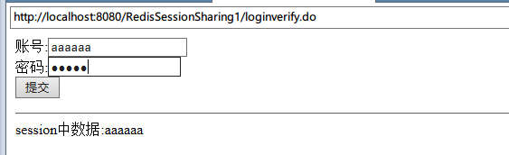
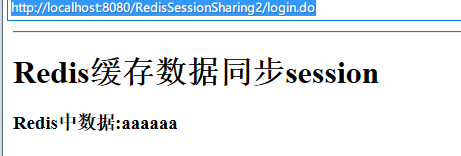

在Web应用中，session的跨应用同步一直是一个比较麻烦的问题。有些web容器自带的session同步机制能够在一定程度上解决这个问题，比如
1.设置Context 的crossContext="true"，
使得各个web应用的servletcontext是可以互访的
2.主动设置cookies，设置jsessionid为被共享的session的id，
统一利用requestsessionid在指定的一个 servletcontext里的一个map查找对于的session，
需要存取attribute都对取得的session操作
这种解决方式能够在一定程度上解决我们的需求，但是它破坏了应用间的独立性，而且使得应用过渡依赖容器，如果更换了web容器就需要采取新的容器级别的解决方案。
因此我们考虑使用第三方的缓存服务器如Redis、Memcached作为session中转，这样使得我们的应用不再与容器耦合，而且对于服务的扩充也有着良好的支持。
这种解决方案的核心思路在于：
假设有两个应用场景A、B，我们在A应用中登录，
将用户信息存入session的同时也存入到Redis中，
这样当我们访问应用B时候可以直接从Redis中通过键值取出对应的值，
然后再次放入session中。也就是通过Redis作为中转，间接实现了session的同步。
<form action="loginverify.do" method="post">
账号:<input type="text" name="username"><br/>
密码:<input type="password" name="userpwd"><br/>
<input type="submit" value="提交">
</form>
我们有一个登录表单，提交到loginverify.do
String username = request.getParameter("username");
......
HttpSession session = request.getSession();
session.setAttribute("username", username);
Jedis jedis = JedisSingleton.getJedisInstance();
jedis.set("username", username);
这里，获取到用户信息，存入session的同时通过set()方式存入Redis中。保持session中数据与Redis中缓存数据一致。JedisSingleton是通过单例模式获取到的Jedis实例，详细可以参考我的第三篇文章http://taxuewwl.github.io/blog/articles/redis%E5%AE%9E%E6%88%9803Java%E4%B8%8B%E4%BD%BF%E7%94%A8jedis%E6%93%8D%E4%BD%9CRedis.html
Jedis jedis = JedisSingleton.getJedisInstance();
request.getSession().setAttribute("username", jedis.get("username"));
request.getRequestDispatcher("/WEB-INF/jsp/index.jsp").forward(request, response);
<h1>Redis缓存数据同步session</h1>
<h3>Redis中数据:${username}<h3>

